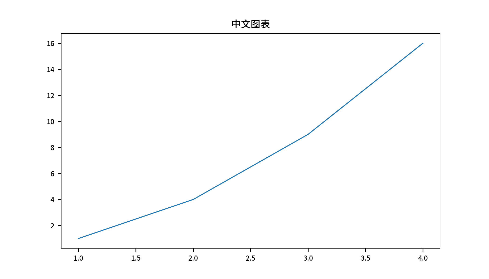
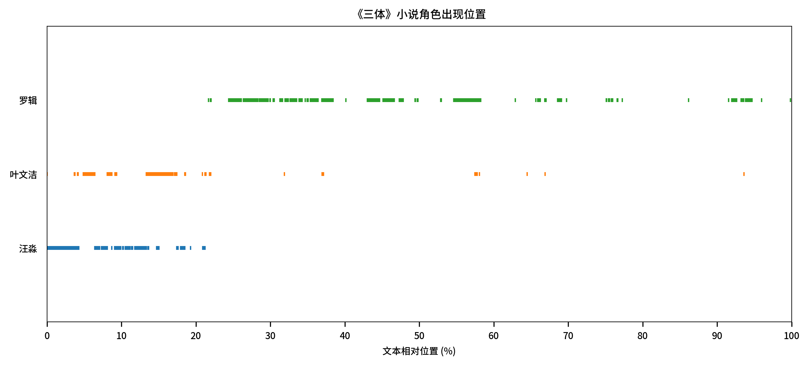
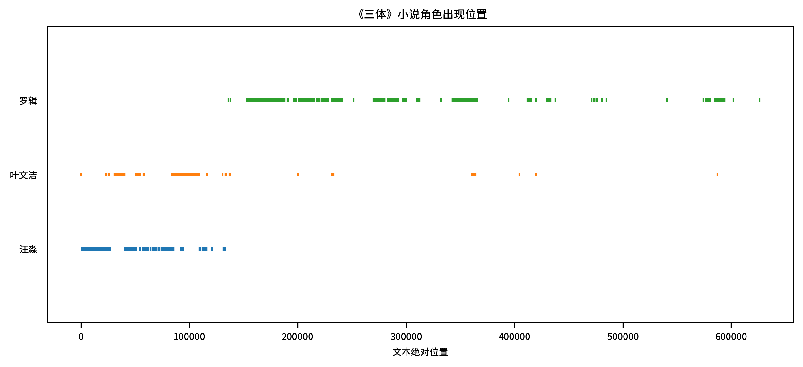
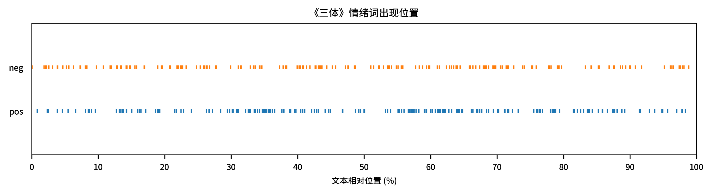

六、Plot模块¶
模块 |
函数 |
功能 |
|---|---|---|
plot |
|
支持matplotlib中文绘图 |
plot |
|
对某一个文本text， 可视化不同目标类别词targets_dict在文本中出现位置 |
plot |
|
对某几个文本texts_dict， 可视化某些目标词targets在文本中出现相对位置(0~100) |
6.1 matplotlib_chinese()¶
matplotlib默认不支持中文可视化， cntext新增该函数，可以解决中文可视化问题
import cntext as ct
plt = ct.matplotlib_chinese()
plt.figure(figsize=(7, 4))
plt.plot([1, 2, 3, 4], [1, 4, 9, 16])
plt.title('中文图表', fontsize=10)
plt.show()

6.2 lexical_dispersion_plot1()¶
词汇分散图可视化， 对某一个文本text， 可视化不同目标类别词targets_dict在文本中出现位置
ct.lexical_dispersion_plot1(text, targets_dict, lang='chinese', figsize=(12, 6), title='特定词汇在不同文本来源的相对离散图', prop=True)
text: 文本数据
targets_dict: 目标类别词字典； targets_dict={'pos': ['开心', '快乐'], 'neg': ['悲伤', '难过']}
lang: 文本数据texts_dict的语言类型，默认'chinese'.
figsize: 图的长宽尺寸. 默认 (8, 5).
title : 图的标题；
prop: 横坐标字符位置是否为相对位置. 默认True，横坐标索引值取值范围0 ~ 100
import cntext as ct
roles_dict = {
"汪淼": ['汪淼'],
"叶文洁": ['叶文洁'],
"罗辑": ['罗辑']
}
santi_text = open('三体.txt', encoding='utf-8').read()
ax = ct.lexical_dispersion_plot1(text = santi_text, #文本数据
targets_dict = roles_dict, #角色
figsize = (10, 4), #尺寸大小
lang = 'chinese', #中文数据
title = '《三体》小说角色出现位置', #标题
prop = True) #相对位置(横坐标轴取值范围0-100)
ax

ct.lexical_dispersion_plot1(text = santi_text, #文本数据
targets_dict = roles_dict, #角色
figsize = (10, 4), #尺寸大小
lang = 'chinese', #中文数据
title = '《三体》小说角色出现位置', #标题
prop = False) #绝对位置(横坐标轴取值范围与小说文本长度有关)

import cntext as ct
# diy了一个小词典
senti_dict = {
'pos': ['开心', '幸福', '快乐', '安宁', '希望'],
'neg': ['紧张', '恐惧', '害怕', '绝望']
}
santi_text = open('三体.txt', encoding='utf-8').read()
ax = ct.lexical_dispersion_plot1(text = santi_text,
targets_dict = senti_dict,
figsize = (10, 2),
lang = 'chinese',
title = '《三体》情绪词出现位置',
prop = True)
ax

6.3 lexical_dispersion_plot2()¶
词汇分散图可视化， 对某几个文本texts_dict， 可视化某些目标词targets在文本中出现相对位置(0~100)
ct.lexical_dispersion_plot2(texts_dict, targets, lang='chinese', figsize=(12, 6), title='特定词汇在不同文本来源的相对离散图')
texts_dict: 多个文本的字典数据。形如{'source1': 'source1的文本内容', 'source2': 'source2的文本内容'}
targets: 目标词列表
lang: 文本数据texts_dict的语言类型，默认'chinese'.
figsize: 图的长宽尺寸. 默认 (8, 5).
title : 图的标题；
targets = ['太空', '宇宙']
texts_dict = {'三体': open('三体.txt', encoding='utf-8').read(),
'基地': open('基地.txt', encoding='utf-8').read()}
ax = ct.lexical_dispersion_plot2(texts_dict = texts_dict,
targets = targets,
figsize = (10, 2),
title = '"太空/宇宙"词语出现位置',
lang = 'chinese')
ax